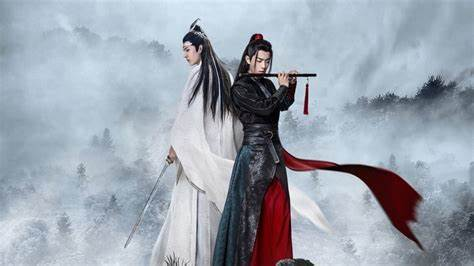
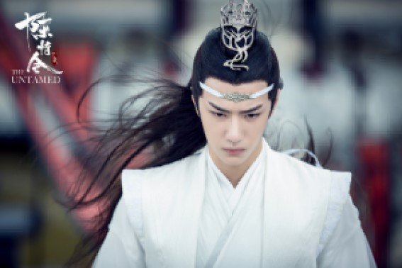
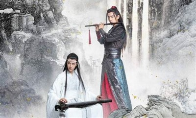
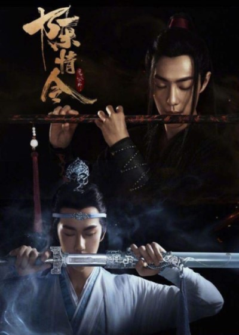

Guarulhos 11 de Março de 2024

Ao universo extenso e fascinante de Mo Dao Zu Shi (O Fundador da Cultivação Demoníaca ou MDZS), uma criação magnífica da chinesa Mo Xiang Tong Xiu (MXTX) que conquistou corações ao redor do mundo. Nesta postagem mergulharemos profundamente na história contida nos livros, exploraremos o histórico da web novel e falaremos das adaptações que nasceram a partir do texto original. Acompanhe-nos nessa jornada repleta de magia, ação e emoção, e descubra o que faz de Mo Dao Zu Shi (O Fundador da Cultivação Demoníaca) uma série completamente imperdível. Em Mo Dao Zu Shi (também conhecido como O Fundador da Cultivação Demoníaca ou apenas MDZS) escrito pela chinesa Mo Xiang Tong Xiu, somos introduzidos a um universo que envolve o mundo dos cultivadores, pessoas que buscam o aprimoramento pessoal e poder através do cultivo de energia espiritual, que pode ser usada para realizar feitos notáveis e até mesmo alcançar a imortalidade. O protagonista da história, Wei Wuxian, revoluciona esse universo com suas ideias inovadoras e sua abordagem não convencional ao cultivo, optando por técnicas demoníacas ao invés das tradicionais. Essa escolha traz consigo não só poder, mas também perigos inimagináveis, e Wei Wuxian se vê envolvido em uma série de tragédias, conflitos e maquinações políticas que culminam em sua queda e morte. No entanto, a história dá uma guinada inesperada quando Wei Wuxian é ressuscitado no corpo de um lunático 13 anos depois de sua morte. A partir desse ponto, a trama se desdobra em uma série de aventuras e mistérios enquanto Wei Wuxian e Lan Wangji, um cultivador de uma das famílias mais respeitadas e um antigo rival de Wei Wuxian, se unem para desvendar os segredos obscuros que rodeiam o mundo dos cultivadores e para limpar o nome de Wei Wuxian. Ao longo da narrativa, testemunhamos o ressurgimento de velhos inimigos, descobertas chocantes e a redenção de um homem que recebe uma segunda chance. A relação entre Wei Wuxian e Lan Wangji é um dos pilares da história, evoluindo de uma rivalidade tensa para uma parceria profunda e respeitosa, marcada por um profundo entendimento e afeto mútuo. A série não apenas nos apresenta a um mundo fascinante de magia e aventura, mas também a uma complexa teia de relacionamentos e a uma profunda exploração das nuances da moralidade humana. A narrativa está repleta de flashbacks que ajudam a construir uma imagem completa dos eventos que levaram à queda e ao ressurgimento de Wei Wuxian, oferecendo uma compreensão profunda das motivações e das dores dos personagens principais. Mo Dao Zu Shi é uma história rica que entrelaça magia, política, tragédia e romance, tudo enquanto nos apresenta a uma gama de personagens tridimensionais que crescem e se desenvolvem de maneiras surpreendentes.
No Livro 1, primeiro volume na ordem dos livros da saga Mo Dao Zu Shi, no auge de celebrações estrondosas e aclamações jubilosas, a notícia da morte de Wei Wuxian, também conhecido como o Patriarca de Yiling, reverbera… Ele, que outrora fora uma estrela ascendente da sua geração, admirado por sua beleza e talento sem igual, escolheu abdicar de tudo para trilhar um caminho solitário na cultivação demoníaca; e assim, nas palavras do mundo, “procurou e achou sua própria ruína“.
 lacuna de treze anos se desdobra e Wei Wuxian se encontra renascido no corpo de um jovem sem identidade. Em meio ao turbilhão de confusão, buscando compreender sua nova realidade, ele se vê envolvido em uma série de eventos inesperados e reencontros que testemunham sua desgraça continuada. À medida que se vê confrontado pelos espectros de seu passado, Wei Wuxian também deve navegar através dos enigmas e desafios que o presente lança à sua frente. Envolvendo-se em uma jornada sem precedentes, memórias de sua vida passada ressurgem, guiando-o em cada passo. Ao seu lado está Lan Wangji, o sempre elegante e irrepreensível. Juntos, eles formam uma dupla determinada a desvendar os segredos que se escondem nas sombras de seu mundo. Que verdades surgirão de sua colaboração e até onde o destino os levará nesta jornada repleta de descobertas e redenção.
No Livro 2, segundo volume na ordem dos livros da saga Mo Dao Zu Shi, as sombras do passado vão sendo dissipadas à medida que a história se desenrola, revelando-se paulatinamente. Orientados pelas instruções oferecidas por um braço fantasmagórico, Wei Wuxian e Lan Wangji encontram-se em uma cidade deserta, onde cada canto ecoa com mistérios inexplorados.
Na jornada para desenterrar as verdades ocultas por trás das histórias de vidas esquecidas, a dupla enfrenta adversidades presentes na localidade abandonada. Este volume de “Mo Dao Zu Shi” promete um desfecho emocionante para os eventos que assolam a Cidade Yi, ao mesmo tempo que continua a narrar a busca incansável pelo “amigão“. Ao longo dessa caminhada repleta de descobertas, fragmentos antes perdidos do passado vêm à tona, dando a Wei Wuxian a oportunidade de perceber que algumas de suas ações tinham implicações muito mais profundas do que ele jamais poderia ter concebido. A jornada deles promete revelações que podem redefinir o que sabem um sobre o outro e sobre eles mesmos.
No Livro 3, terceiro volume na ordem dos livros da saga Mo Dao Zu Shi, marcando seu caminho com devastação, o Clã Wen avança implacavelmente. Na sequência do brutal assalto ao Píer Lótus, Jiang Cheng e Wei Wuxian são compelidos a fazer escolhas irreversíveis que irão eternamente esculpir suas trajetórias individuais. Em meio à revelação de agonizantes segredos e o esclarecimento de mistérios enraizados, este volume pavimenta o caminho para o grandioso arco conclusivo da narrativa. Wei Wuxian, agora não mais um lobo solitário, prepara-se para enfrentar o mundo ardiloso da cultivação. Uma jornada de autodescobrimento e reconciliação está prestes a se desdobrar, enquanto antigos e novos aliados se juntam a ele na luta que definirá seu legado e o futuro do mundo dos cultivadores. Cada passo adiante é uma homenagem à resistência, à amizade e à coragem de enfrentar adversidades insuperáveis com determinação e honra.
No Livro 3, terceiro volume na ordem dos livros da saga Mo Dao Zu Shi, marcando seu caminho com devastação, o Clã Wen avança implacavelmente. Na sequência do brutal assalto ao Píer Lótus, Jiang Cheng e Wei Wuxian são compelidos a fazer escolhas irreversíveis que irão eternamente esculpir suas trajetórias individuais. Em meio à revelação de agonizantes segredos e o esclarecimento de mistérios enraizados, este volume pavimenta o caminho para o grandioso arco conclusivo da narrativa Wei Wuxian, agora não mais um lobo solitário, prepara-se para enfrentar o mundo ardiloso da cultivação. Uma jornada de autodescobrimento e reconciliação está prestes a se desdobrar, enquanto antigos e novos aliados se juntam a ele na luta que definirá seu legado e o futuro do mundo dos cultivadores. Cada passo adiante é uma homenagem à resistência, à amizade e à coragem de enfrentar adversidades insuperáveis com determinação e honra.